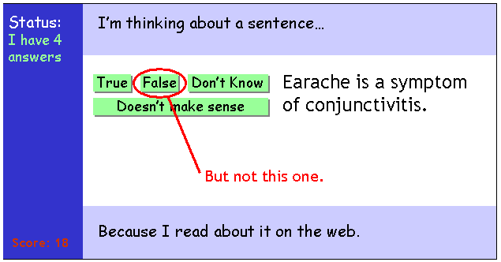
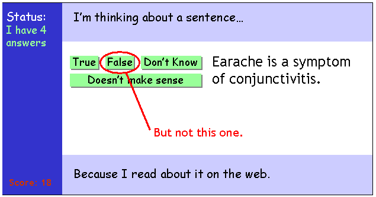

Cyc is trying to determine the truth or falsehood of a series of facts. It will ask about things someone has told it, things it read about on the web, and things that it's just guessing about. You will be presented with these facts and asked whether you think they're true or false.
As people play the game, Cyc accumulates votes; when enough people have agreed that a fact is true or not, Cyc considers it confirmed and stops asking about it.


If you tell Cyc something that disagrees with what others have said, it gets confused.
Of course, it's always all right to say you don't know whether a fact is true or not.